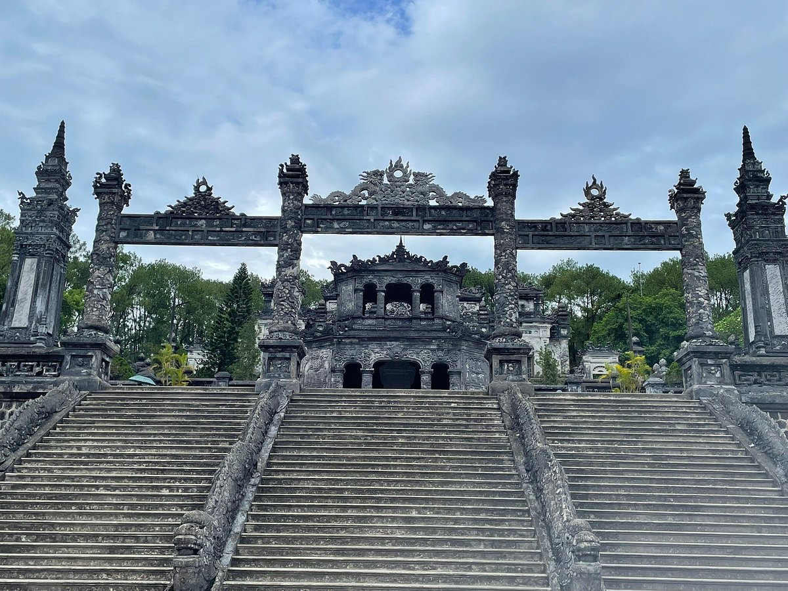

Top three places to visit at Hue City

Imperial City of Hue
Famously being one of Vietnam’s seven UNESCO World Heritage Sites, the Imperial City of Hue has long been a must-see attraction for tourists visiting a hidden charm of Vietnam.
Click here to learn moreTruong Tien Bridge
Truong Tien Bridge is a majestic symbol associated with many important milestones in Hue Imperial City. The bridge is located in the center of Hue city. It crosses the beautiful Perfume River and plays a key role in connecting the two riversides between the North and the South of the royal land.
Click here to learn more

Imperial City of Hue
From moss-covered towers hidden in the hills to faded stone warriors proudly protecting the dead, the Hue tombs evoke the feeling of a forgotten, almost mythological world.
Click here to learn more